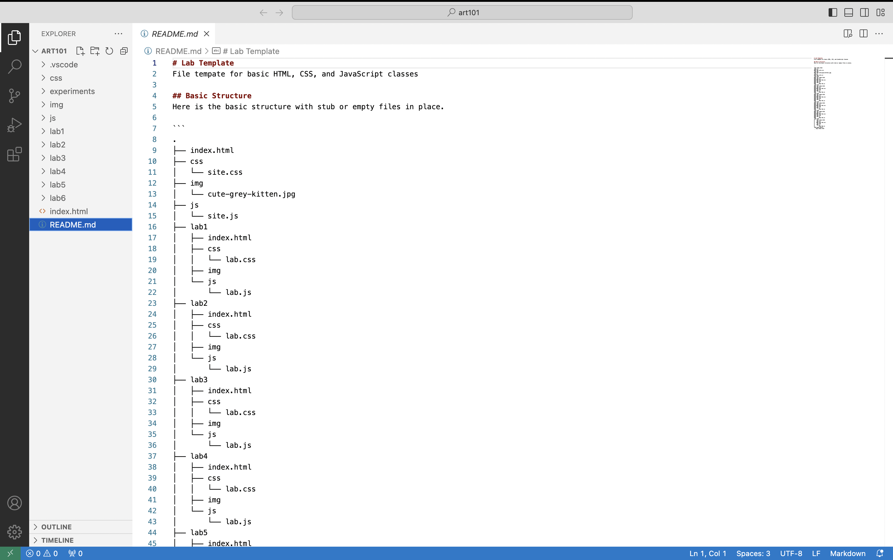

Challenge
The challenge for this lab was to manage our file structure and to add or edit index.html files.
Problems
Figuring out how to adjust images and insert them was abit of a problem, but after some tweaking with the width I was able to make it work.
Results
The results of this lab is being shown here, all of it! This is the index.html file i created, and this image below is the file structure I made:
